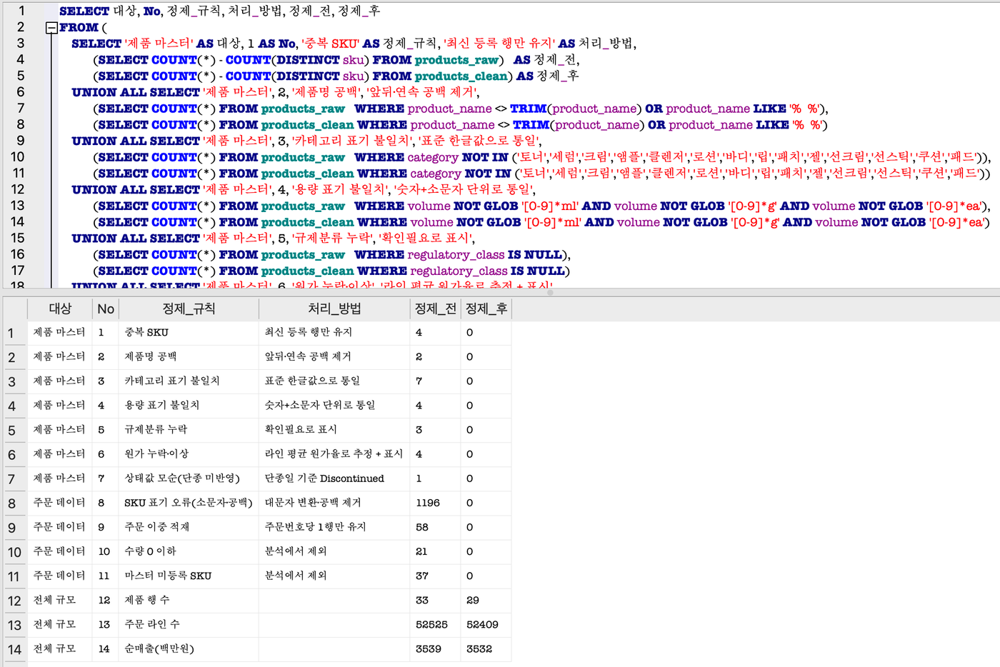
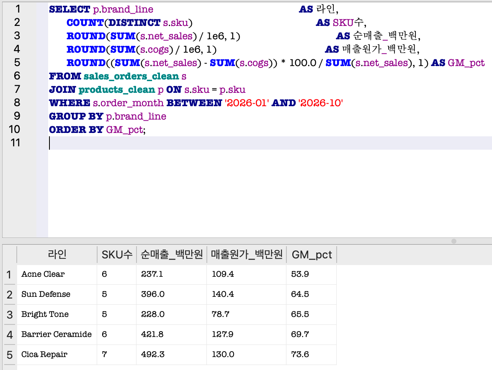
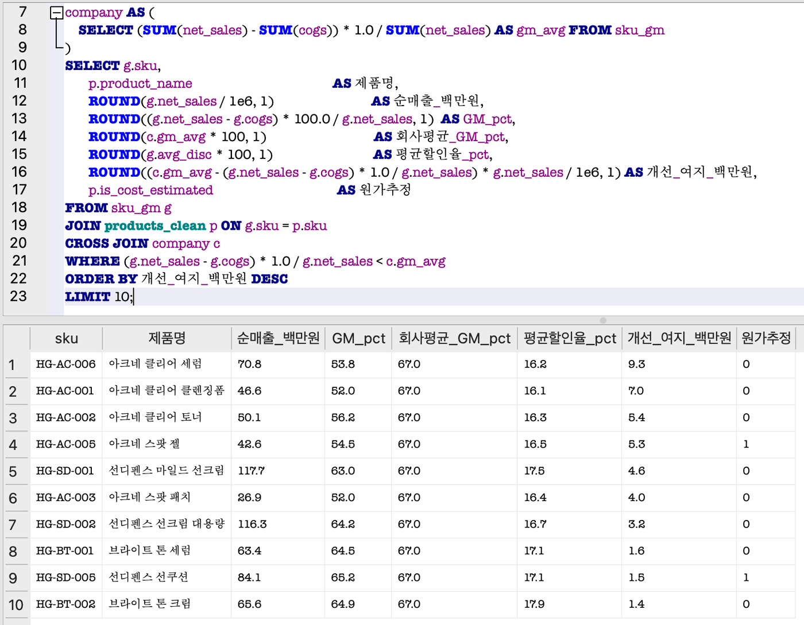

Derma cosmetics data cleansing
and sales analysis
I cleansed the product master and order data of a derma-cosmetics brand with SQL, proved that no errors remained, and then analyzed year-over-year growth by channel and gross margin by brand line and SKU.
11 cleansing rules found and fixed 1,337 errors; re-running the same checks on the clean tables returned 0 for all 11 rules, with the raw tables kept unchanged.
On the clean data, Acne Clear has the lowest gross margin (53.9% vs. 67.0% company average), and 5 of the 10 SKUs below the average belong to that line.
Can the numbers be trusted before they are analyzed?
What errors exist in the product master and order data, how many, and are any left after cleansing? Using the cleansed data, how do growth rates differ by channel, and gross margin by brand line and SKU?
Process
- Define error types — 11 error types written as SQL conditions (duplicate SKUs, inconsistent labels, invalid costs, double-loaded orders, unmatched SKUs) and counted each.
- Keep raw data — raw tables left unchanged; separate clean tables built. Missing costs estimated from the line's average cost ratio and flagged.
- Validate before vs. after — the same checks run on raw and clean tables to confirm zero errors remain; excluded order lines reconciled.
- Analyze — year-over-year growth by channel, gross margin by brand line, SKUs below the company-average margin.
All 11 rules at 0 after cleansing
For each cleansing rule, the same condition is applied to the raw and clean tables and the counts are compared side by side.

Excluded order lines: 58 double-loaded + 21 with quantity ≤ 0 + 37 with SKUs not in the master = 116 lines. Net sales changed from KRW 3,539M to KRW 3,532M. Three products with a missing regulatory class were flagged "needs review" rather than filled in.
SQL used: UNION ALL · scalar subqueries · COUNT(DISTINCT) · TRIM / UPPER · GLOB · IS NULL
Issue log handed to each owner team
Instead of silently fixing data, each issue was logged with the action taken and the department that should confirm it (MD, cost accounting, regulatory affairs, sales operations, IT/ERP).
Show full issue log (36 entries)
| # | Table | Key | Issue | Detail | Action | Owner |
|---|---|---|---|---|---|---|
| 1 | products_raw | HG-AC-003 | 중복 SKU | 2건 등록: 아크네 스팟 패치 / 아크네 스팟패치 24매 | 최신 updated_at 행 유지 | MD팀 |
| 2 | products_raw | HG-BT-001 | 중복 SKU | 2건 등록: 브라이트 톤 세럼 / 브라이트톤 세럼 | 최신 updated_at 행 유지 | MD팀 |
| 3 | products_raw | HG-CR-003 | 중복 SKU | 2건 등록: 시카 리페어 크림 / 시카리페어 크림 50ml | 최신 updated_at 행 유지 | MD팀 |
| 4 | products_raw | HG-SD-001 | 중복 SKU | 2건 등록: 선디펜스 마일드 선크림 / 선디펜스 마일드 선크림(구) | 최신 updated_at 행 유지 | MD팀 |
| 5 | products_raw | HG-SD-005 | 원가 이상 | 정가 28000 / 원가 NULL | 라인 평균 원가율로 임시 추정 | 원가팀 |
| 6 | products_raw | HG-AC-005 | 원가 이상 | 정가 14000 / 원가 -5420 | 라인 평균 원가율로 임시 추정 | 원가팀 |
| 7 | products_raw | HG-BT-004 | 원가 이상 | 정가 38000 / 원가 NULL | 라인 평균 원가율로 임시 추정 | 원가팀 |
| 8 | products_raw | HG-BC-006 | 원가 이상 | 정가 9000 / 원가 21900 | 라인 평균 원가율로 임시 추정 | 원가팀 |
| 9 | products_raw | HG-AC-004 | 규제분류 누락 | 아크네 스팟 패치 소형 | 확인필요로 표기 | RA팀 |
| 10 | products_raw | HG-SD-004 | 규제분류 누락 | 선디펜스 톤업 선크림 | 확인필요로 표기 | RA팀 |
| 11 | products_raw | HG-BC-005 | 규제분류 누락 | 세라마이드 바디로션 | 확인필요로 표기 | RA팀 |
| 12 | products_raw | HG-AC-004 | 상태값 모순 | 단종일 2025-12-31 인데 status=Active | Discontinued로 변경 | MD팀 |
| 13 | products_raw | HG-CR-002 | 표기 비표준 | category=[Serum] volume=[50ml] | 표준값으로 변환 | MD팀 |
| 14 | products_raw | HG-BC-003 | 표기 비표준 | category=[ 크림] volume=[50ml] | 표준값으로 변환 | MD팀 |
| 15 | products_raw | HG-BT-003 | 표기 비표준 | category=[토너] volume=[150mL] | 표준값으로 변환 | MD팀 |
| 16 | products_raw | HG-CR-003 | 표기 비표준 | category=[Cream] volume=[50ml] | 표준값으로 변환 | MD팀 |
| 17 | products_raw | HG-AC-002 | 표기 비표준 | category=[토너] volume=[200] | 표준값으로 변환 | MD팀 |
| 18 | products_raw | HG-CR-001 | 표기 비표준 | category=[토너] volume=[200 mL] | 표준값으로 변환 | MD팀 |
| 19 | products_raw | HG-SD-001 | 표기 비표준 | category=[Sunscreen] volume=[50ml] | 표준값으로 변환 | MD팀 |
| 20 | products_raw | HG-BC-001 | 표기 비표준 | category=[toner] volume=[200ml] | 표준값으로 변환 | MD팀 |
| 21 | products_raw | HG-BT-001 | 표기 비표준 | category=[세럼 ] volume=[30ml] | 표준값으로 변환 | MD팀 |
| 22 | products_raw | HG-BT-002 | 표기 비표준 | category=[cream] volume=[50ml] | 표준값으로 변환 | MD팀 |
| 23 | products_raw | HG-BC-002 | 표기 비표준 | category=[로션] volume=[200ML] | 표준값으로 변환 | MD팀 |
| 24 | sales_orders_raw | HG-CR-099 | 마스터 미등록 SKU | 14개 주문라인, 순매출 1356991 | 분석 제외 | 영업관리팀 |
| 25 | sales_orders_raw | HG-SD-0O1 | 마스터 미등록 SKU | 10개 주문라인, 순매출 1177451 | 분석 제외 | 영업관리팀 |
| 26 | sales_orders_raw | HG-XX-001 | 마스터 미등록 SKU | 13개 주문라인, 순매출 1142752 | 분석 제외 | 영업관리팀 |
| 27 | sales_orders_raw | CH01 | 수량 0 이하 | 3개 주문라인 | 분석 제외 (반품 여부 확인 필요) | 영업관리팀 |
| 28 | sales_orders_raw | CH02 | 수량 0 이하 | 1개 주문라인 | 분석 제외 (반품 여부 확인 필요) | 영업관리팀 |
| 29 | sales_orders_raw | CH03 | 수량 0 이하 | 6개 주문라인 | 분석 제외 (반품 여부 확인 필요) | 영업관리팀 |
| 30 | sales_orders_raw | CH04 | 수량 0 이하 | 5개 주문라인 | 분석 제외 (반품 여부 확인 필요) | 영업관리팀 |
| 31 | sales_orders_raw | CH05 | 수량 0 이하 | 1개 주문라인 | 분석 제외 (반품 여부 확인 필요) | 영업관리팀 |
| 32 | sales_orders_raw | CH06 | 수량 0 이하 | 1개 주문라인 | 분석 제외 (반품 여부 확인 필요) | 영업관리팀 |
| 33 | sales_orders_raw | CH07 | 수량 0 이하 | 1개 주문라인 | 분석 제외 (반품 여부 확인 필요) | 영업관리팀 |
| 34 | sales_orders_raw | CH08 | 수량 0 이하 | 1개 주문라인 | 분석 제외 (반품 여부 확인 필요) | 영업관리팀 |
| 35 | sales_orders_raw | CH09 | 수량 0 이하 | 2개 주문라인 | 분석 제외 (반품 여부 확인 필요) | 영업관리팀 |
| 36 | sales_orders_raw | ALL | 주문 이중 적재 | 58개 행 중복 | 중복 제거 | IT/ERP팀 |
The log is written in Korean, as it was designed for a Korean company's internal teams. Download CSV ↓
Year-over-year growth by channel
Net sales for Jan–Oct 2026 compared with the same period in 2025. A CTE splits sales by year, then joins channel details.

- Qoo10 Japan grew fastest (+90.4%); hospital & clinic had the largest increase in value (KRW 231.6M, +59.0%).
- Pharmacy, one of the largest channels (KRW 449.0M), grew +10.5%, below the company's +28.0%.
- Tmall Global (−14.4%) and duty-free (−27.6%) declined.
SQL used: WITH (CTE) · SUM(CASE WHEN) · JOIN · ROUND
Gross margin by brand line and SKU
Cleansed orders for Jan–Oct 2026 joined with the product master. GM = (net sales − COGS) ÷ net sales.


Of the top 10: Acne Clear 5, Sun Defense 3, Bright Tone 2. Discounts are similar across SKUs (16.1–17.9%), so the gap appears to come from cost structure rather than discounting. Two SKUs use estimated costs and need actual costs confirmed.
SQL used: JOIN · GROUP BY · WHERE BETWEEN · WITH (2 CTEs) · CROSS JOIN · AVG · ORDER BY … LIMIT
Limitations
- The data is synthetic; the aim is to show the cleansing, validation and aggregation process rather than the figures themselves.
- Four SKUs with missing or invalid costs use estimated costs, so their gross margin may differ from actual.
- 2026 data runs to October, so growth compares Jan–Oct of both years.
- Gross margin is before promotion spend and channel fees.
- Query screenshots show Korean column aliases and channel/product names.